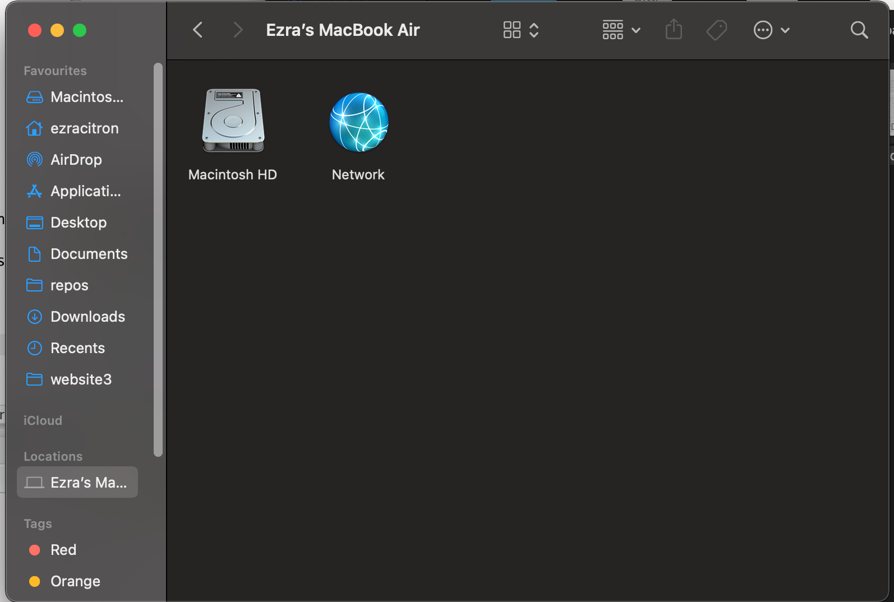

Managing your files boils down to 3 things. Creating them, deleting them and moving them. All of these things you have probably done countless times, by clicking on files in a window that looks very much like this 
That is all fine, and works very well for 90% of cases. But, what happens when you have 2000 files and you need to rename all of then, do you really want to be clicking through each of them? This is when a less graphical-user-interface reliance workflow can really come in handy. I’ll be setting up a dummy problem and showing you how to solve it with the fs package in R.